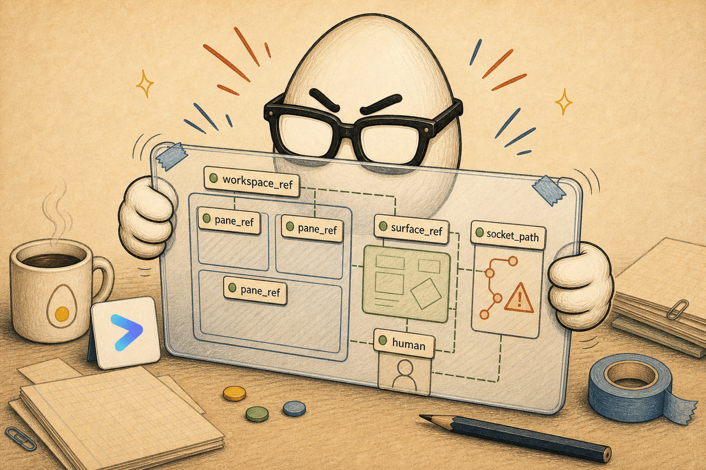
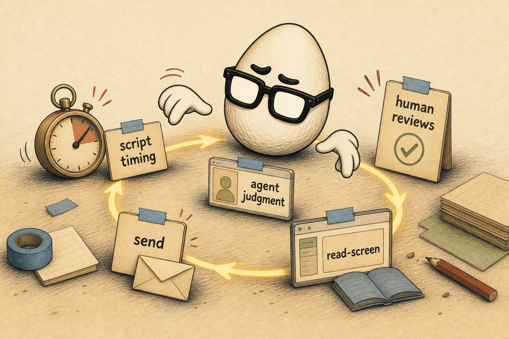

The branded article
The same reading column, night shift. Surfaces go to ink, the yolk glows harder, and the paper notes stay daylight.
The reading column is the whole design. One measure, around 66 characters wide, set in round and friendly Nunito so it moves at 2× speed. Everything else — figures, code, cards — earns its place by breaking out of that column when it needs the room, then handing the width straight back.
Keep paragraphs to a breath or two. When a sentence wants to sprawl, cut it into two. The page is a workbench, not a wall of text: every few paragraphs, hand the reader something to look at.
Lead with the one idea
The lede earns the scroll. State the single thing the reader walks away with, in plain language, before any setup. Everything after is evidence for that promise. One idea per article — spin the rest into their own.
Show the work in code
Snippets get a dark terminal so they read as doing, not describing. Keep them short enough to scan — the smallest runnable thing that makes the point, nothing more. A code block can break out wider than the prose when the lines need it.
# the smallest thing that proves the point npx create-egghead-article "the-branded-article" --template field-guide # inline code reads like this: git push origin master
Use inline code for names, flags, and short commands inside a sentence. Save the navy card for anything you'd actually run or copy.
Break out when it helps
Three widths, one column. Most content sits in the reading measure. Figures and code step out to breakout. A full-bleed band uses full — sparingly, for a hero moment or a wide diagram.

Keep the rhythm
Prose carries the argument; the accents keep it from going flat. A field rule flags a boundary or a warning. A sticky note interrupts in Eggo's own hand. A pull quote lets one line breathe.
Drawn, not rendered. The egg does not crack.

Lists are fine when the content is genuinely a list — steps, options, a checklist — and prose everywhere else:
- One idea, stated up top, proven below.
- Short paragraphs, generous spacing, real bold (Nunito has the weights).
- Code in the navy card; names and flags inline.
- Figures and code break out; the column always comes back.
Land it
The last section points forward — the thing to try, the next article, the video that goes with it. An article that pairs with a recording should name it right here, where the reader is ready to act.